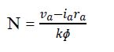
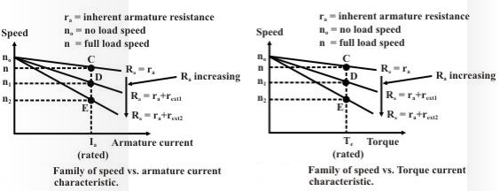
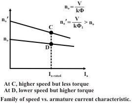

Computer Science & Engineering Computer Graphics
List Of Experiments
Points & Co-ordinate Systems
Introduction
We know that the speed of shunt motor is given by.

Where, Va is the voltage applied across the armature and φ is the flux per pole and is proportional to the field current If.. As explained earlier, armature current Ia is decided by the mechanical load present on the shaft. Therefore, by varying Va and If we can vary n. For fixed supply voltage and the motor connected as shunt we can vary Va by controlling an external resistance connected in series with the armature. If of course can be varied by controlling external field resistance Rf connected with the field circuit. Thus for .shunt motor we have essentially two methods for controlling speed, namely by:
1. Varying armature resistance.
2. Varying field resistance.
Speed control by varying armature resistance
In this method a variable series resistor Rext is put in the armature circuit. In this case the field is directly connected across the supply and therefore the flux ɸ is not affected by variation of Rext. in this case the current and hence the flux are affected by the variation of the armature
circuit resistance. The voltage drop in Rext reduces the voltage applied to the armature and therefore the speed is reduces.
The slope of the n vs. Iaor n vs. Te characteristic can be modified by deliberately connecting external resistance rext in the armature circuit. One can get a family of speed vs. armature curves for various values of rext. From these characteristic it can be explained how speed control is achieved. Let us assume that the load torque TL is constant and field current is also kept constant. Therefore, since steady state operation demands Te = TL, Te = kφ too will remain constant; which means Iawill not change. Suppose rext = 0, then at rated load torque, operating point will be at C and motor speed will be n. If additional resistance rext1 is introduced in the armature circuit, new steady state operating speed will be n1 corresponding to the operating point D.
In this way one can get a speed of n2 corresponding to the operating point E, when rext2 is introduced in the armature circuit. This same load torque is supplied at various speed. Variation of the speed is smooth and speed will decrease smoothly if rext is increased. Obviously, this method is suitable for controlling speed below the base speed and for supplying constant rated load torque which ensures rated armature current always. Although, this method provides smooth wide range speed control (from base speed down to zero speed), has a serious draw back since energy loss takes place in the external resistance rext reducing the efficiency of the motor.

Speed control by varying field current
In this method field circuit resistance is varied to control the speed of a d.c shunt motor. Let us rewrite .the basic equation to understand the method.
If we vary I f, flux φ will change, hence speed will vary. To change If an external resistance is connected in series with the field windings. The resistance is called the shunt field regulator .the field coil produces rated flux when no external resistance is connected and rated voltage is applied across field coil. It should be understood that we can only decrease flux from its rated value by adding external resistance. Thus the speed of the motor will rise as we decrease the field current and speed control above the base speed will be achieved. Speed versus armature current characteristic is shown.
